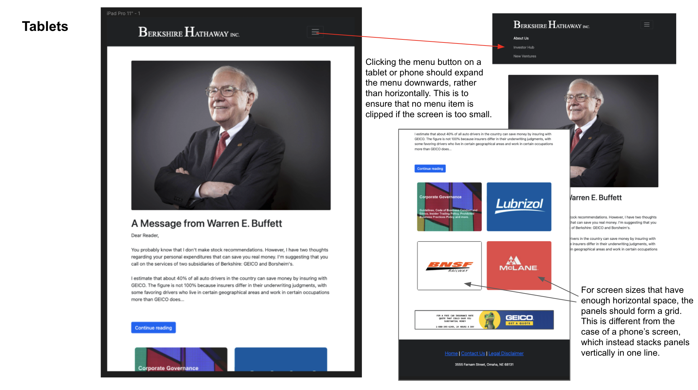
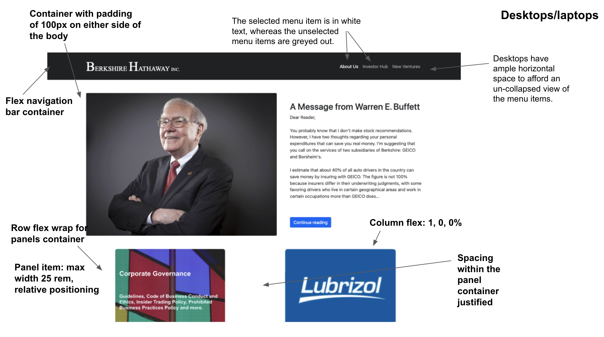

Part 1: Identifying Usability Problems
Introduction
For this project, I have chosen to critique and redesign Berkshire Hathaway’s official website to make it more usable, accessible and informative.You can view the website I am redesigning by clicking this link.
Context
When critiquing this website, it is essential that we understand the original intention of the website, the information that is important to convey and the audiences that Berkshire tries to cater to. Berkshire Hathaway is a conglomerate consisting of companies in industries such as insurance, manufacturing, energy and many more. It is also well-known as a holding company of a suite of diversified securities, with large stakes in companies like Apple, Coca Cola, Kraft and T-Mobile. At the helm of the company is famed investor Warren Buffet. (source: here) Because there are many moving parts to Berkshire Hathaway, one can sympathize with the design choice to link to all of its components on the home landing page (which is the page we are critiquing). However, the lack of hierarchy or visual cues as to how information on the page is organized makes it hard for visitors of the website to immediately get to what they need. There is a lot of room for improvement to make Berkshire Hathaway more accessible and cater towards the growing tech-savvy population.Finding problems and Accessibility
How the website looks on a phone:

Accessibility comments from WebAIM Wave:
Positive comments:
The linked image of the Geico logo has alt text
The links are presented in structured elements
Contrast of text and background: Pass
Negative comments:
6x very small text
No page regions
No heading structure
Redundant link for the Geico logo
What the WebAIM report identified is correct, but I disagree with certain negative and positive characterizations. The report liked the contrast between the text and the background, but what facilitates that contrast is a lack of visual color cues to designate sections. I also disagree that the hyperlinked Geico logo is redundant–having both hyperlinked text and image gives affordances to both visual people and people who would rather read the textual hyperlink.
Part 2: Visual Redesign
Lo-Fi Prototype:
Mobile phoneTablet
Desktop
High-Fi Prototype:
Mobile phone
Tablets

Desktops
